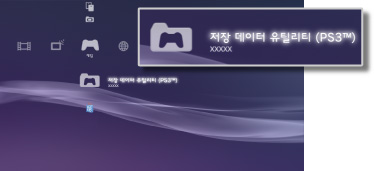

게임 > PlayStation®3 규격 소프트웨어 즐기기 > 저장 데이터에 대하여
저장 데이터에 대하여
PlayStation®3 규격 소프트웨어의 저장 데이터는 본체 스토리지에 저장됩니다.  (저장 데이터 유틸리티 (PS3™))에 표시됩니다.
(저장 데이터 유틸리티 (PS3™))에 표시됩니다.

알아두기
- 저장 데이터는 각 유저별로 관리됩니다.
 (유저)에서 복수의 유저를 작성한 경우 로그인한 유저에 따라 (저장 데이터 유틸리티 (PS3™))에 표시되는 내용이 다릅니다.
(유저)에서 복수의 유저를 작성한 경우 로그인한 유저에 따라 (저장 데이터 유틸리티 (PS3™))에 표시되는 내용이 다릅니다. - 저장 데이터의 아이콘을 선택하고
 버튼을 누르면 옵션 메뉴가 표시되어 갱신 일시순으로 배열을 바꾸거나 타이틀별로 폴더를 분류할 수 있습니다.
버튼을 누르면 옵션 메뉴가 표시되어 갱신 일시순으로 배열을 바꾸거나 타이틀별로 폴더를 분류할 수 있습니다.
저장 데이터를 PSNSM 서버에 저장하기
PlayStation®3 규격 소프트웨어의 저장 데이터를 PSNSM의 서버에 저장하거나 다른 PS3™에 다운로드하여 게임을 계속 즐길 수 있습니다. 이 기능을 사용하시려면 Sony Entertainment Network의 계정과 PlayStation®Plus 가입이 필요합니다.
자동으로 온라인 스토리지에 저장하기
갱신된 저장 데이터를 정기적으로 온라인 스토리지에 자동 저장할 수 있습니다.
이 기능은 게임별로 설정해야 합니다.
1. |
|
|---|---|
2. |
[저장 데이터 자동 업로드]를 선택한 후 [켜기]로 설정합니다. |
 [게임]에서 저장 데이터를 저장할 게임을 선택한 후
[게임]에서 저장 데이터를 저장할 게임을 선택한 후 알아두기
- 설정을 활성화한 후 갱신이 있는 저장 데이터가 대상이 됩니다.
 (설정) >
(설정) >  (시스템 설정) > [자동 업데이트]를 [끄기]로 설정하면 저장 데이터의 자동 업로드가 비활성화됩니다.
(시스템 설정) > [자동 업데이트]를 [끄기]로 설정하면 저장 데이터의 자동 업로드가 비활성화됩니다.
수동으로 온라인 스토리지에 저장하기
1. |
|
|---|---|
2. |
[복사]를 선택합니다. |
3. |
저장 위치로 [온라인 스토리지]를 선택합니다. |
온라인 스토리지의 저장 데이터를 PS3™에 다운로드하기
1. |
|
|---|---|
2. |
다운로드할 저장 데이터를 선택한 후 |
3. |
[복사]를 선택합니다. |
알아두기
- 이용할 수 있는 온라인 스토리지 크기는 최대 1 GB, 저장 가능한 저장 데이터의 수는 최대 1000 개입니다.
- PlayStation®3 규격 소프트웨어, PC Engine, NEO GEO 이외의 저장 데이터는 저장할 수 없습니다.
- 복사 금지된 저장 데이터는 다음과 같이 대응합니다.
- - 온라인 스토리지로의 업로드: 수시로 가능합니다.
- - 온라인 스토리지에서 PS3™로 다운로드: 온라인 스토리지에 저장된 데이터는 업로드 및 다운로드로부터 24시간이 경과한 후에 다운로드할 수 있습니다.
- 게임에 따라 온라인 스토리지를 이용할 수 없는 경우가 있습니다. 대응하지 않는 게임 및 서비스에 대한 자세한 사항은 여기를 참조해 주십시오.